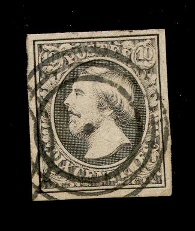

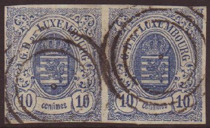
Typical cancel; 3 concentric rings with a dot in the center. According to http://www.luxcentral.com/stamps/LuxPostmarks.html, there are 16 varieties of this cancel.
Return To Catalogue - Luxembourg 1852 issue - Luxembourg 1859-1881 - Luxembourg 1882-1913
Note: on my website many of the
pictures can not be seen! They are of course present in the
catalogue;
contact me if you want to purchase it.
For forgeries of the Luxemburg stamps see: http://www.luxcentral.com/stamps/LuxFakes.html. A nice site on the cancels of Luxemburg can be found at: http://www.luxcentral.com/stamps/LuxPostmarks.html; from this site I quote the cancels that can be found in the period 1852-1920: Mute cancel (concentric circles, bars in circle, etc. 1852-1873), Dutch type (one circle 1852-1871), Two-circle Belgian type (1852-1871), Two-circle French type (1852-1872), Two-circle German type (1870-1873), Single-circle German type (1872-1882), Large Two-circle German type (1882-1905), bridge type (with bars 1906-1940 and without bars 1916-1940). Furthermore railroad cancels (Ambulant) and precancels can be found in this period.
 
Typical cancel; 3 concentric rings with a dot in the center.
According to http://www.luxcentral.com/stamps/LuxPostmarks.html,
there are 16 varieties of this cancel.
Interrupted triple circle with dot in the center; used in the
town of Remich.
According to http://www.luxcentral.com/stamps/LuxPostmarks.html, the folloiwing 8 postoffices had slightly different cancels: Bascharage, Cap, Clervaux, Echternach, Luxembourg, Luxembourg-Gare, Mersch and Remich. If I understand correctly, they have different number of bars (for example Mersch only has 6 bars, while other have 7, 8 or 9 bars.

Frisange 'Circular Waffle' cancel with a Belgian-type FRISANGE
date cancel besides it.
Mute cancel: Circle made up out of small lozenges (from the town of Ettelbruck)
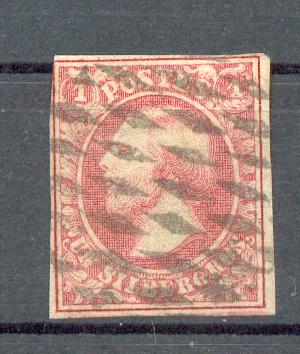 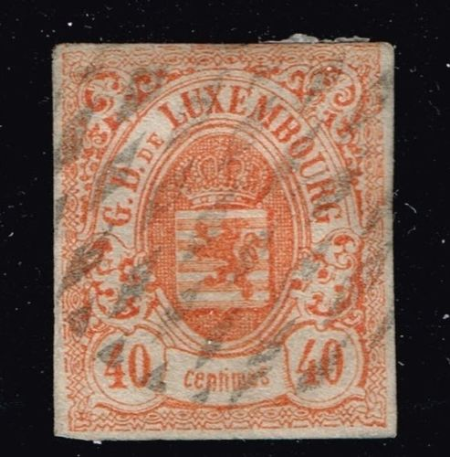
(A lozenges cancel of Ettelbruck)
According to
http://www.luxcentral.com/stamps/LuxPostmarks.html, the following
three cancels exist (all used in Luxembourg town):
26 lines forming a rectangle
30 lines forming an oval
46 lines forming a double trapezoid
26 lines 'Colossus' cancel


Recangles consisting of parallel bars.
a) lines from left to right (12 types)
b) lines from right to left (Remich)
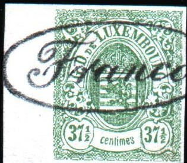
Forgery of the 37 1/2 c value with forged 'Franco' cancel made by
the forger Sperati.
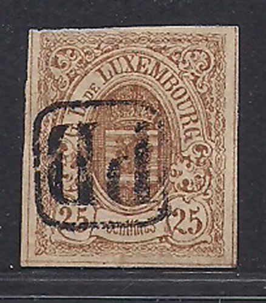
Forged 'PD' in a rounded square cancels on forged stamps (the 'G'
of 'LUXEMBOURG' has a tail!)
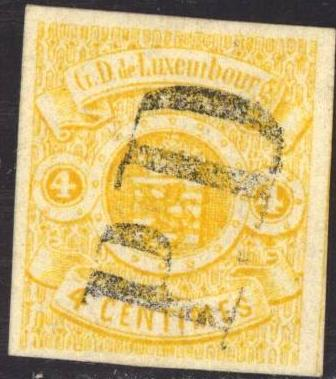 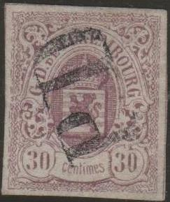
Forged 'PD' cancels without outer rectangle on a forged stamps
(see there for more information).
I'm not sure if this 'P.P' in a lozenge is a genuine cancel from
Luxembourg or not.

"O" in a small circle, I'm not sure where this cancel
was used for.
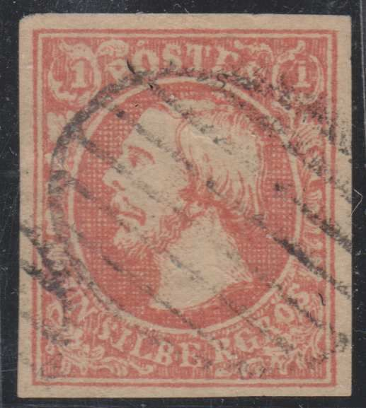 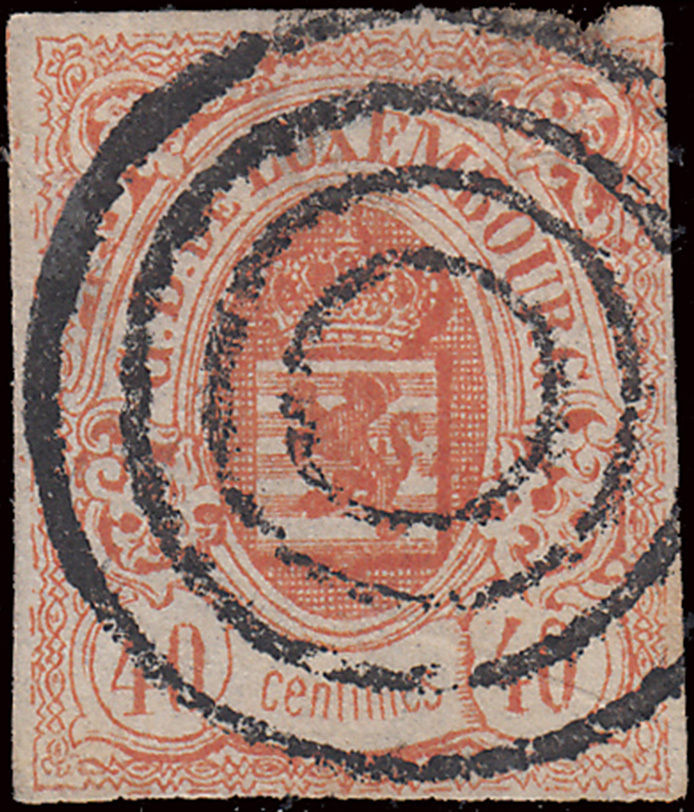


Forgeries with bogus mute cancels; Ellipses with bars and
four-ring cancels were never used in Luxembourg.

Dutch type cancel with 'P.D.' in the bottom (with Dutch
inscription 'LUXEMBURG' and month in Dutch?), used from 1852 to
1871. Also exists with 'P.P.' at the bottom.


According to http://www.luxcentral.com/stamps/LuxPostmarks.html,
this is a French type two-circles postmark used from 1852-1872.

If I'm well informed this is a German-type two-circles postmark
used from 1870 to 1873.
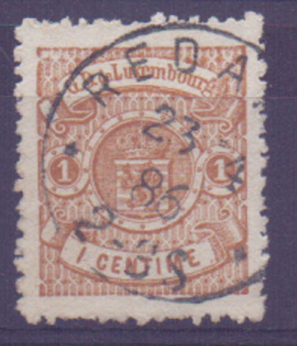 

Single circle German-type postmark used from 1872 to 1882.


Special circular date cancel of Luxemburg town with an additional
'P.D.' at the bottom, called 'herniaire' by the Serrane Guide
(=hernial; with sack).

Railroad cancel "ULFINGEN LUXEMBURG" in a small
rectangle.
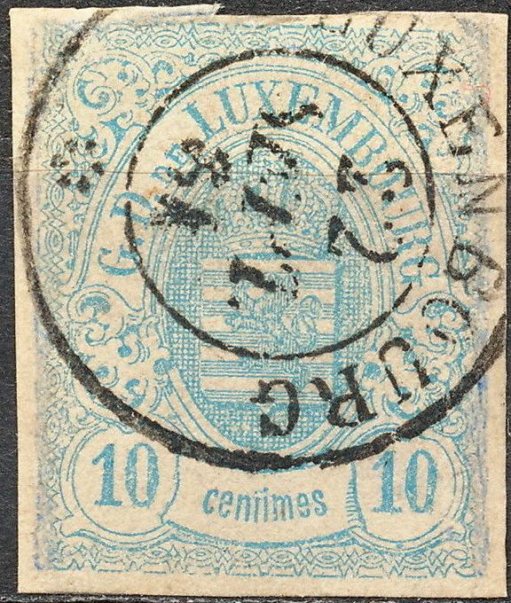
"LUXENBOURG" (with an "N"!)
Stamps - Timbres-Poste - Briefmarken


{kind=link}
{kind=link}
{kind=link}
{kind=link}
{kind=link}
{kind=link}
{kind=link}
{kind=link}
{kind=link}
{kind=link}
{kind=link}
{kind=link}
{kind=link}
{kind=link}